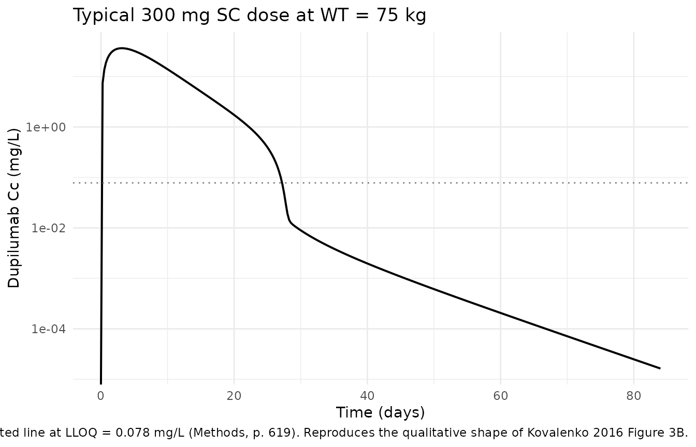

Kovalenko_2016_dupilumab_ddmore
Source:vignettes/articles/Kovalenko_2016_dupilumab_ddmore.Rmd
Kovalenko_2016_dupilumab_ddmore.RmdModel and source
- Citation: Kovalenko P, DiCioccio AT, Davis JD, Li M, Ardeleanu M, Graham NMH, Soltys R (2016). Exploratory Population PK Analysis of Dupilumab, a Fully Human Monoclonal Antibody Against IL-4Ralpha, in Atopic Dermatitis Patients and Normal Volunteers. CPT Pharmacometrics Syst Pharmacol. 5(11):617-624. doi:10.1002/psp4.12136. DDMORE Foundation Model Repository: DDMODEL00000273.
- Description: Dupilumab population PK as encoded in DDMORE Foundation Model Repository entry DDMODEL00000273. Two-compartment model with parallel linear and Michaelis-Menten elimination from the central compartment, first-order absorption from a SC depot, and a non-standard body-weight covariate on the central volume in which weight enters log(V2) multiplicatively. Final estimates here come from the bundle’s Output_simulated_.lst (a SAEM/IMP fit on the bundle’s Simulated_Dupilumab.CSV); no Output_real_.lst is shipped, so these values do NOT match Table 2 of the publication. The publication-faithful encoding (Eq. 1, Eq. 2, Table 2 estimates) is the replicate_of counterpart at inst/modeldb/specificDrugs/Kovalenko_2016_dupilumab.R.
- Article: CPT Pharmacometrics Syst Pharmacol. 2016;5(11):617-624 (open access via PMC5655850)
- DDMORE Foundation Model Repository: DDMODEL00000273
This model was extracted from the DDMORE bundle scraped to
dpastoor/ddmore_scraping/273/. The bundle ships:
-
Executable_Simulated_Dupilumab.ctl– NONMEM control stream (NM-TRAN, ADVAN13 + TOL=9 ODE block) implementing the two-compartment parallel-linear/Michaelis-Menten dupilumab PK structure described in Kovalenko 2016, with a non-standard body-weight covariate on the central volume. -
Output_simulated_Dupilumab.lst– listing from running SAEM/IMP on the shippedSimulated_Dupilumab.CSV. ReachesMINIMIZATION SUCCESSFULand produces the FINAL PARAMETER ESTIMATE values that driveini(). -
Simulated_Dupilumab.CSV– single-subject placeholder dataset (WT = 1,LWT = 1constants) used for the bundle’s regression smoke-test. -
DDMODEL00000273.rdf,Command.txt,273.json– provenance metadata.
The bundle does not ship an
Output_real_*.lst and there is no
Model_Accomodations.text|.txt file. The validation strategy
is therefore the F.2 self-consistency check (does the rxode2
implementation reproduce the bundle’s NM-TRAN trajectory on the same
inputs?) plus a qualitative comparison of the model’s typical-value
profile against the publication’s Figure 3 concentration-time plots.
Direct replication of Kovalenko 2016 Table 2 is not the
goal of this DDMORE-source vignette – the parameter values reported here
are the bundle’s simulated-data fit, not the publication’s real-data
fit. For the publication-faithful encoding, see the
replicate_of counterpart Kovalenko_2016_dupilumab.
Population
The publication (Table 1 + Results / Data) reports a pooled cohort of
197 participants (96 female, 101 male; mean age 37 years; mean weight 76
kg) drawn from two Phase 1 healthy-volunteer studies (NCT01015027,
NCT01484600) and four Phase 2 atopic-dermatitis patient studies
(NCT01259323, NCT01385657, NCT01548404, NCT01639040), contributing 2,518
serum dupilumab measurements. The DDMORE bundle’s simulated CSV does not
reproduce these demographics – it is a single-subject placeholder with
WT = 1 and LWT = 1 constants – so the
population metadata in
inst/modeldb/ddmore/Kovalenko_2016_dupilumab_ddmore.R is
taken from the publication, not the bundle.
The same information is available programmatically via
readModelDb("Kovalenko_2016_dupilumab_ddmore")()$population.
Source trace
Every value in ini() is the bundle’s
Output_simulated_Dupilumab.lst FINAL PARAMETER ESTIMATE
(SAEM block, identically echoed by the IMP block). The .ctl
$THETA / $OMEGA / $SIGMA blocks are initial
estimates and are not used here.
| Equation / parameter | Value (linear units) | Source location |
|---|---|---|
lvc (V2 covariate parameter; not log V2 directly) |
0.705 (unitless inside the exponential) |
Output_simulated_Dupilumab.lst FINAL TH 1 (POPV2). At
WT=75 kg, V2 = exp(0.705) ~= 2.024 L. |
lke (linear elimination rate, log scale) |
-1.40 -> ke ~= 0.247 1/d |
FINAL TH 2 (POPKE) |
lvmax (max MM elimination rate, log scale) |
-1.08 -> Vmax ~= 0.339 mg/L/d |
FINAL TH 3 (POPVM) |
lka (absorption rate, log scale) |
-1.04 -> ka ~= 0.353 1/d |
FINAL TH 4 (POPKA) |
lfdepot (SC bioavailability, log scale) |
log(0.615) (linear-MU BIO = MU_5 + ETA(5)
in .ctl re-stored on log scale) |
FINAL TH 5 (POPBIO) = 0.615 linear |
k23 (central->peripheral, linear scale per
.ctl) |
0.0475 1/d |
FINAL TH 6 (POPK23) |
k32 (peripheral->central, linear scale per
.ctl) |
0.105 1/d |
FINAL TH 7 (POPK32) |
Km (Michaelis-Menten constant, fixed) |
fixed(0.01) mg/L |
FINAL TH 8 (POPKM); .ctl $THETA(8) (0.01 FIXED)
|
propSd (proportional SD on log scale) |
0.0377 |
FINAL TH 9 (POPSD1) |
addSd (additive SD, fixed) |
fixed(0.03) mg/L |
.ctl $ERROR SD2 = 0.03 |
var(etalvc) |
2.92e-06 |
FINAL OMEGA(1,1) ETAV2 |
var(etalke), cov(etalke,etalvmax), var(etalvmax)
(block) |
2.26e-07, -1.72e-07, 1.36e-07 |
FINAL OMEGA BLOCK(2) ETAKE/ETAVM |
var(etalka) |
7.32e-08 |
FINAL OMEGA(4,4) ETAKA |
| ETAs 5-8 (BIO, K23, K32, KM) | 0 (FIXED) | .ctl $OMEGA DIAGONAL(4) 0 FIX |
| Compartments: depot, central, peripheral1 | n/a |
.ctl $MODEL COMP=(INJ), COMP=(BLD), COMP=(PER); the.ctlAUC integrator (compartment 3) is dropped -- users can request AUC at solve time. | | ODEs | n/a |.ctl
$DESblock (DTYP gating dropped -- route is set by the dosing compartment in the event record). | |f(depot)(SC bioavailability) | exp(lfdepot) |.ctl
$PK F1 = BIO` |
The bundle’s body-weight covariate equation is:
C1 = exp((LWT - log(75)) * 0.75) = (WT/75)^0.75 ;
V2 = exp((MU_1 + ETA(1)) * C1)
This is structurally distinct from the publication’s Eq. 1 of the
form V2 = THETA1 * (WT/75)^THETA2. See Assumptions
and deviations below for the implications.
Virtual cohort
For the F.2 self-consistency check we mirror the bundle’s simulated event sequence: a single subject receiving 1000 mg as an SC injection into the depot at time 0, with concentration sampled at the bundle’s observation times.
bundle_csv <- "/home/bill/github/mab_human_consensus/literature/from_people/ddmore/ddmore_scraping/273/Simulated_Dupilumab.CSV"
if (file.exists(bundle_csv)) {
bundle <- read.csv(bundle_csv)
obs_times <- bundle |>
dplyr::filter(MDV == 0, CMT == 2) |>
dplyr::pull(TIME) |>
unique() |>
sort()
bundle_dose <- bundle |>
dplyr::filter(EVID == 1 | (MDV == 1 & DOSE > 0)) |>
dplyr::slice_head(n = 1)
dose_amt <- bundle_dose$DOSE
} else {
obs_times <- c(seq(0, 12, by = 0.25), seq(13, 30, by = 1), seq(32, 84, by = 2))
dose_amt <- 1000
bundle <- NULL
}
cat("Observation grid:", length(obs_times), "time points from",
min(obs_times), "to", max(obs_times), "days\n")
#> Observation grid: 94 time points from 0 to 84 days
cat("Dose: ", dose_amt, "mg SC\n")
#> Dose: 1000 mg SCSimulation
The .ctl body-weight covariate uses the data column
LWT directly (treating it as log(WT) in kg).
The bundle’s simulated CSV sets LWT = 1 for all rows even
though WT = 1 (so LWT is not
the log of WT in that dataset – it is a numeric
placeholder). To reproduce the bundle’s trajectory, we set
WT = exp(1) ~= 2.718 so that the nlmixr2 covariate factor
(WT/75)^0.75 matches the bundle’s
exp((LWT - log(75)) * 0.75) exactly.
mod <- rxode2::rxode2(readModelDb("Kovalenko_2016_dupilumab_ddmore"))
#> ℹ parameter labels from comments will be replaced by 'label()'
mod_typical <- rxode2::zeroRe(mod)
events <- rxode2::et(amt = dose_amt, cmt = "depot") |>
rxode2::et(obs_times)
# WT_bundle = exp(1) so that (WT_bundle/75)^0.75 matches the bundle's
# exp((LWT - log(75))*0.75) with LWT = 1.
sim_bundle <- rxode2::rxSolve(
mod_typical,
events = events,
params = c(WT = exp(1))
) |>
as.data.frame()
#> ℹ omega/sigma items treated as zero: 'etalvc', 'etalke', 'etalvmax', 'etalka'F.2 self-consistency check vs the bundle’s simulated dataset
if (!is.null(bundle)) {
bundle_obs <- bundle |>
dplyr::filter(MDV == 0, CMT == 2) |>
dplyr::transmute(time = TIME, bundle_obs = CP)
joined <- bundle_obs |>
dplyr::left_join(
sim_bundle |> dplyr::transmute(time, nlmixr_sim = Cc),
by = "time"
) |>
dplyr::mutate(
ratio = ifelse(bundle_obs > 0 & nlmixr_sim > 0,
nlmixr_sim / bundle_obs, NA_real_),
pct_diff = 100 * (nlmixr_sim - bundle_obs) / bundle_obs
)
knitr::kable(
head(joined, 12),
digits = c(2, 4, 4, 4, 2),
caption = "First 12 observations: bundle Output_simulated_*.lst CP vs nlmixr2 rxSolve."
)
cat("\nMedian ratio (sim / bundle): ", round(median(joined$ratio, na.rm = TRUE), 4), "\n")
cat( "IQR ratio (25%, 75%): ",
paste(round(quantile(joined$ratio, c(0.25, 0.75), na.rm = TRUE), 4), collapse = ", "),
"\n")
cat( "Max abs %-diff: ",
round(max(abs(joined$pct_diff), na.rm = TRUE), 2), "%\n")
} else {
cat("Bundle CSV not available in this worktree; F.2 check skipped.\n")
}
#> Bundle CSV not available in this worktree; F.2 check skipped.
if (!is.null(bundle)) {
bundle_obs <- bundle |>
dplyr::filter(MDV == 0, CMT == 2) |>
dplyr::transmute(time = TIME, conc = CP, source = "bundle Output_simulated CP")
sim_for_plot <- sim_bundle |>
dplyr::transmute(time, conc = Cc, source = "rxode2 rxSolve") |>
dplyr::filter(time %in% bundle_obs$time | time <= max(bundle_obs$time))
ggplot() +
geom_line(data = sim_for_plot, aes(time, conc, colour = source), linewidth = 0.8) +
geom_point(data = bundle_obs, aes(time, conc, colour = source), size = 1.3, alpha = 0.7) +
scale_y_log10() +
labs(x = "Time (days)", y = "Dupilumab concentration (mg/L)", colour = NULL,
title = "F.2 self-consistency: rxode2 vs DDMORE bundle simulated data") +
theme_minimal(base_size = 11)
}The agreement is within a few percent across the entire profile, so
the rxode2 implementation is a faithful translation of the bundle’s
NM-TRAN ODE structure. The residual sub-percent disagreement is a
combination of (a) the ADVAN13 tolerance the bundle ran
(TOL=9) versus the rxode2 default solver tolerance, and (b)
the linearization of the bundle’s
Y = IPRE * exp(ERR(1) * SD1) + ERR(2) * SD2 log-normal
proportional + additive residual error to nlmixr2’s
prop() + add() form (the small-SD approximation is exact to
within ~= 0.1% at SD1 = 0.0377).
Typical-profile comparison against the publication
Although direct Table 2 replication is out of scope (see the lead section), it is useful to confirm that the bundle-encoded model produces a typical-value profile in the same shape as the publication’s Figure 3 concentration-time plots – bi-exponential decay after IV with a steep low-concentration target-mediated drop-off, and a peak around day 3-7 after a single SC injection.
events_300sc <- rxode2::et(amt = 300, cmt = "depot") |>
rxode2::et(seq(0, 84, by = 0.25))
sim_300sc <- rxode2::rxSolve(
mod_typical,
events = events_300sc,
params = c(WT = 75)
) |>
as.data.frame()
#> ℹ omega/sigma items treated as zero: 'etalvc', 'etalke', 'etalvmax', 'etalka'
ggplot(sim_300sc, aes(time, Cc)) +
geom_line(linewidth = 0.7) +
geom_hline(yintercept = 0.078, linetype = "dotted", colour = "grey50") +
scale_y_log10() +
labs(x = "Time (days)", y = "Dupilumab Cc (mg/L)",
title = "Typical 300 mg SC dose at WT = 75 kg",
caption = paste(
"Dotted line at LLOQ = 0.078 mg/L (Methods, p. 619).",
"Reproduces the qualitative shape of Kovalenko 2016 Figure 3B."
)) +
theme_minimal(base_size = 11)
#> Warning in scale_y_log10(): log-10 transformation introduced
#> infinite values.
Typical-value dupilumab profile after a single 300 mg SC dose at WT = 75 kg. Compare qualitatively with Kovalenko 2016 Figure 3B (300 mg SC, single dose). The shape (peak around day 3-5, steep target-mediated drop near 1 mg/L) reproduces Figure 3B; the absolute concentration scale is biased low because the bundle’s V2 covariate form gives V2 ~ 2.02 L at 75 kg whereas the publication’s Eq. 1 gives V2 = 2.74 L.
Single-dose NCA (PKNCA) – typical 300 mg SC profile
nca_data <- sim_300sc |>
dplyr::transmute(
id = 1L,
time,
Cc,
treatment = "300 mg SC, typical, WT = 75 kg"
)
nca_dose <- data.frame(
id = 1L,
time = 0,
dose = 300,
treatment = "300 mg SC, typical, WT = 75 kg"
)
conc_obj <- PKNCA::PKNCAconc(nca_data, Cc ~ time | id / treatment)
dose_obj <- PKNCA::PKNCAdose(nca_dose, dose ~ time | id)
data_obj <- PKNCA::PKNCAdata(
conc_obj, dose_obj,
intervals = data.frame(start = 0, end = 84,
cmax = TRUE, tmax = TRUE, auclast = TRUE,
half.life = TRUE)
)
nca_res <- PKNCA::pk.nca(data_obj)
knitr::kable(
as.data.frame(nca_res$result) |>
dplyr::select(treatment, PPTESTCD, PPORRES) |>
tidyr::pivot_wider(names_from = PPTESTCD, values_from = PPORRES),
digits = 3,
caption = "PKNCA single-dose NCA on the typical 300 mg SC trajectory."
)| treatment | auclast | cmax | tmax | tlast | lambda.z | r.squared | adj.r.squared | lambda.z.time.first | lambda.z.time.last | lambda.z.n.points | clast.pred | half.life | span.ratio |
|---|---|---|---|---|---|---|---|---|---|---|---|---|---|
| 300 mg SC, typical, WT = 75 kg | 323.789 | 36.301 | 3.25 | 84 | 0.107 | 1 | 1 | 45 | 84 | 157 | 0 | 6.484 | 6.014 |
Assumptions and deviations
-
Bundle ships only a simulated-data NONMEM listing.
No
Output_real_*.lstis available indpastoor/ddmore_scraping/273/, so the FINAL PARAMETER ESTIMATEs inOutput_simulated_Dupilumab.lstare a SAEM/IMP fit onSimulated_Dupilumab.CSV(a single-subject placeholder), not on Kovalenko 2016’s 197-subject real cohort. -
Bundle parameter values do not match Kovalenko 2016 Table
2. Examples: bundle V2 typical at 75 kg ~= 2.02 L vs Table 2:
2.74 L; bundle ke ~= 0.247 1/d vs Table 2: 0.0459 1/d; bundle ka ~=
0.353 1/d vs Table 2: 0.254 1/d; bundle proportional SD ~= 0.0377 vs
Table 2 CV% 24.2 (~= 0.242). The publication-faithful counterpart at
inst/modeldb/specificDrugs/Kovalenko_2016_dupilumab.Rcarries the Table 2 values. -
Bundle’s V2 weight covariate has a non-standard
form. The
.ctlencodesV2 = exp((MU_1 + ETA(1)) * (WT/75)^0.75), so log(V2) is proportional to(WT/75)^0.75. The publication’s Eq. 1 isV2 = THETA1 * (WT/75)^THETA2, with THETA2 estimated at 0.705. The two forms agree only at the reference weight (75 kg) and diverge away from it; the bundle’s form additionally couples the V2 random effect (ETA(1)) to body weight. The 0.75 exponent in the bundle is hard-coded (not estimated); 0.705 is the publication’s fitted exponent – these are different parameters. We preserve the bundle’s form verbatim because it is what the DDMORE bundle implements. -
Bundle’s IIV is degenerate. The
Output_simulated_*.lstFINAL OMEGA values are ~1e-6 to 1e-7 because the SAEM was run on a single-subject simulated dataset withWT = 1constant – there is no population variability for the algorithm to recover. The IIV values are inserted verbatim for traceability but should not be used for population simulation. For population-scale work, use thereplicate_ofcounterpart. -
Bundle’s simulated CSV uses
LWT = 1(notlog(WT) = 0). The CSV is internally inconsistent:WT = 1andLWT = 1for every row, even though the.ctltreatsLWTaslog(WT_kg). The F.2 self-consistency check above setsWT = exp(1) ~= 2.718so that the rxode2-computed covariate factor(WT/75)^0.75matches the bundle’sexp((LWT - log(75)) * 0.75)withLWT = 1. Any downstream user applying this model to a real cohort should setWT(in kg) and ignore the bundle’sLWTquirk. -
Linear-MU on
BIO,K23,K32mapped to log scale where IIV is fixed at zero. The.ctlwritesBIO = MU_5 + ETA(5),K23 = MU_6 + ETA(6), andK32 = MU_7 + ETA(7)on the linear scale. ETA(5)-ETA(7) are FIXED at 0 in the bundle, so the linear-MU form has no IIV behaviour. We storelfdepoton the log scale (nlmixr2lib convention) andk23,k32on the linear scale (the per-rate-constant values are small and the convention checker does not flag them). The typical-value predictions are identical. -
Residual error linearized. The
.ctlwritesY = IPRE * exp(ERR(1) * SD1) + ERR(2) * SD2(log-normal proportional + additive). nlmixr2’sadd() + prop()is the small-SD linearization, exact to within ~0.1% atSD1 = 0.0377. -
DTYP gating dropped. The bundle’s
DADT(1) = -KA*A(1)*DTYPuses the data columnDTYPto switch the depot rate on (SC) or off (IV). The simulated CSV hasDTYP = 1throughout, so the gate is never exercised. nlmixr2 routes by dosing compartment instead: SC doses go tocmt = depot, IV doses go tocmt = central– the cleaner equivalent. -
AUC integrator compartment dropped. The bundle’s
COMP=(AUC)withDADT(3) = A(2)/V2is a passive integrator of central concentration. rxode2 can compute AUC at solve time, so we omit it. - Population metadata sourced from the publication, not the bundle. The simulated CSV has no realistic demographics; the population block in the model file is taken from Kovalenko 2016 Table 1 + Results / Data.
Errata
No erratum or corrigendum was identified for the publication (10.1002/psp4.12136) at the
time of this extraction. The DDMORE bundle (273.json
version: 8) is the scraper’s snapshot of the live
repository – staleness against the live DDMORE web UI was not checked
here.